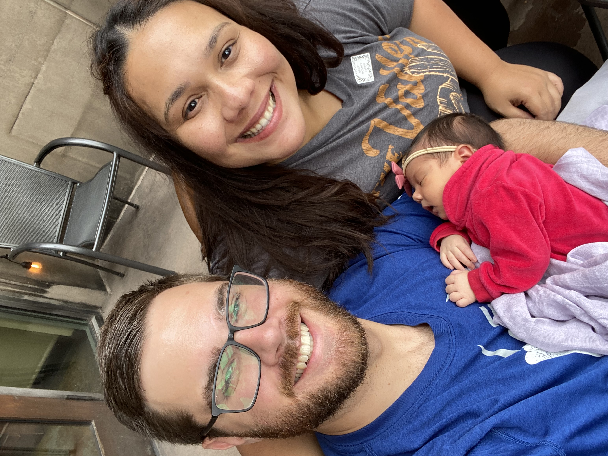

Justin Ashby | WDD 130
My name is Justin Ashby, and I am just now getting back to college after a seven year break. I am 30 years old, I've been married to Elisangela for 7 years, and I have 3 beautiful children: Amelia, who is 3; Elliot, who is 15 months; and Rylee, who is now a month old. I decided to go back to college because I wanted to make a career change, and I took out a few library books to see what I thought, and felt prompted that this is the right thing to do now!